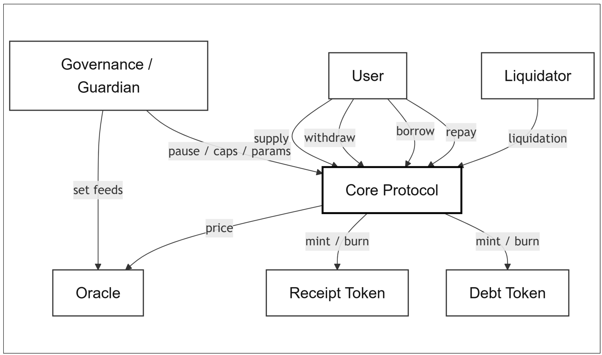
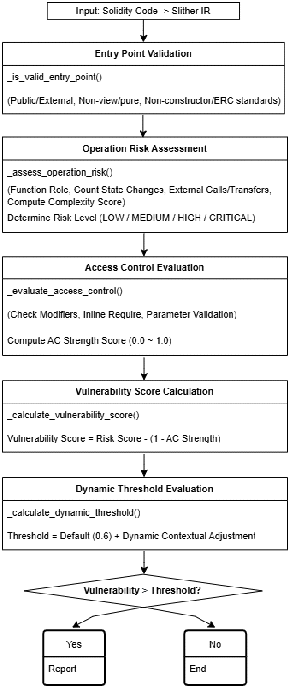
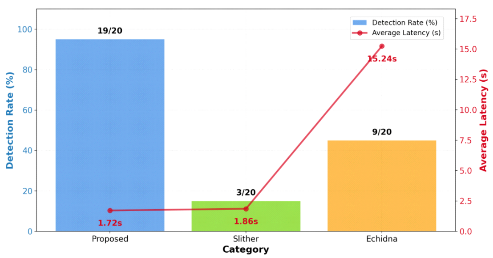
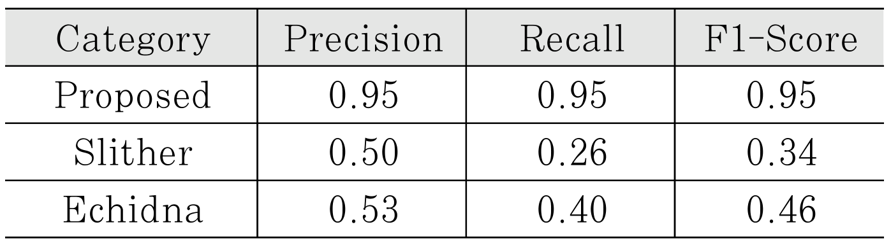

내용
자금을 옮기는 함수에 호출자 권한 확인이 빠지면 곧바로 자산 손실로 이어집니다.
- 상황
- 탈중앙 금융(DeFi)은 중개 기관 없이 프로그램이 대출과 예치, 자산 교환을 처리합니다.
- 어려운 이유
- 프로토콜마다 권한 관리 방식이 달라 한 가지 규칙으로 점검하기 어렵습니다.

Publication
함수별 위험도와 권한 검증 강도를 점수로 계산해 권한 검증이 빠졌거나 우회될 수 있는 함수를 찾습니다. 자금이나 관리 권한을 다루는 함수를 배포 전에 점검하는 절차입니다.
2020~2024년 해킹 사례 20건. 같은 조건에서 Slither 3건, Echidna 9건
Slither 1.86초, Echidna 15.24초
해킹 사례 20건 기준. F1은 Slither 0.34, Echidna 0.46
자금을 옮기는 함수에 호출자 권한 확인이 빠지면 곧바로 자산 손실로 이어집니다.

함수마다 위험도와 권한 검증 강도를 점수로 매겨 검증이 부족한 함수를 찾습니다.

실제 해킹 사례 20건 중 19건을 탐지했고 평균 1.72초가 걸렸습니다.


권한 검증을 점수로 판정하는 절차를 설계하고 실제 사고로 비교한 논문입니다.
실행 중에 생기는 상호작용은 포착하지 못해 동적 분석과의 결합이 과제입니다.